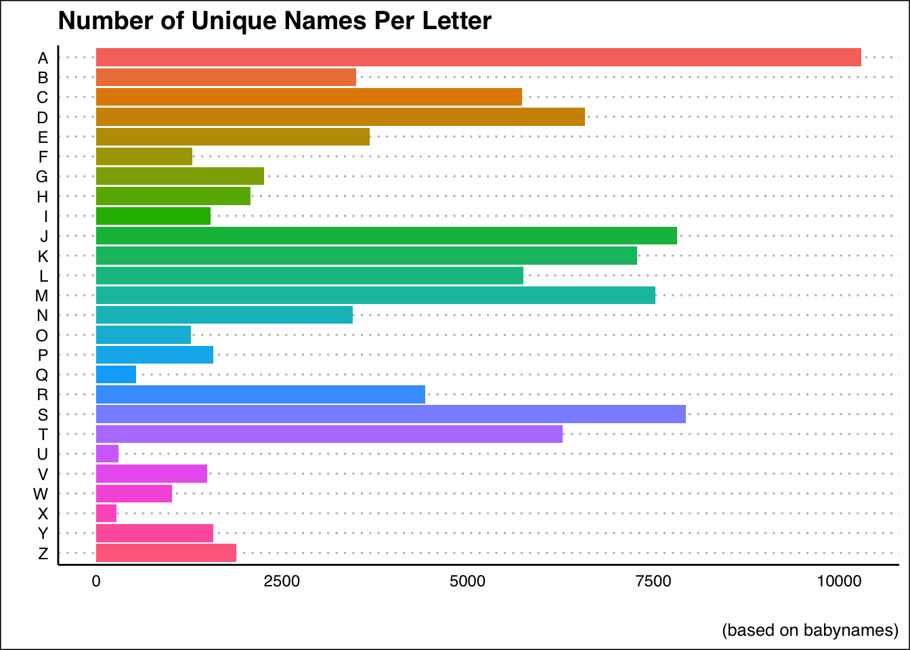
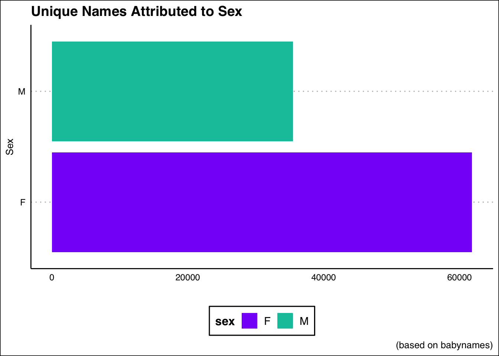
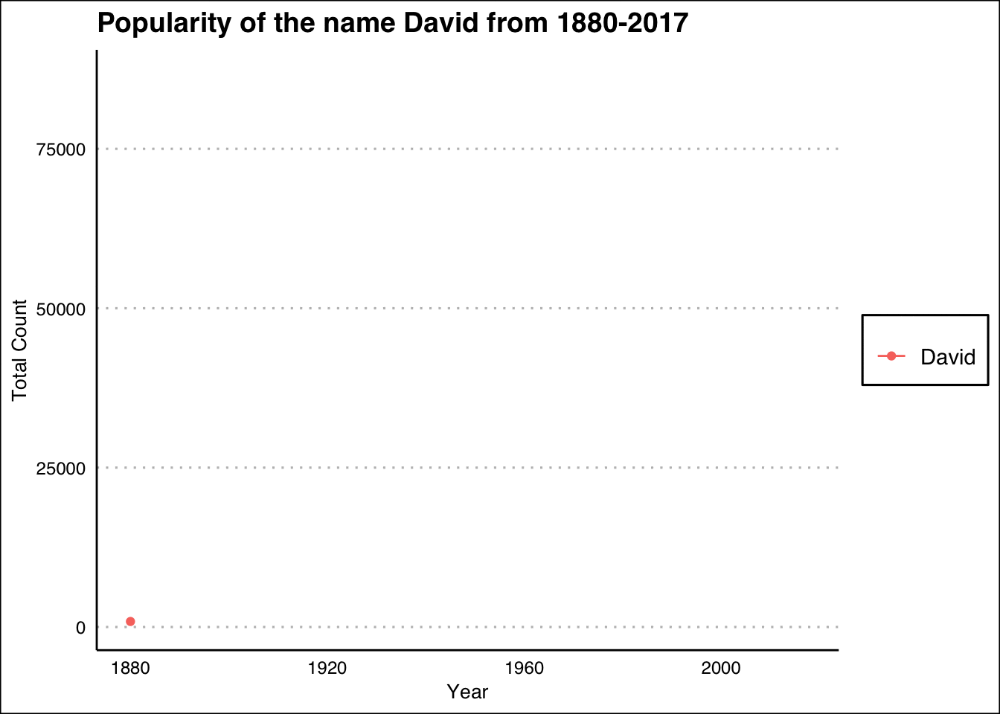

We will be using the babynames dataset to explore the dplyr and ggplot2 package.
First, let us take a look at the babynames dataset.
# Preview of what the dataset looks like
head(babynames)# A tibble: 6 x 5
year sex name n prop
<dbl> <chr> <chr> <int> <dbl>
1 1880 F Mary 7065 0.0724
2 1880 F Anna 2604 0.0267
3 1880 F Emma 2003 0.0205
4 1880 F Elizabeth 1939 0.0199
5 1880 F Minnie 1746 0.0179
6 1880 F Margaret 1578 0.0162The table is structured in the following:
There are a myriad of questions we could ask here!
We will need to use dplyr and distinct in order to find the number of unique names, or else we will run into an issue in which multiple instances of a name will be counted–thereby obscuring the actual number.
babynames %>%
# Get data ready to be sorted by name
group_by(name) %>%
# Count how many times each name appears
count()# A tibble: 97,310 x 2
# Groups: name [97,310]
name n
<chr> <int>
1 Aaban 10
2 Aabha 5
3 Aabid 2
4 Aabir 1
5 Aabriella 5
6 Aada 1
7 Aadam 26
8 Aadan 11
9 Aadarsh 17
10 Aaden 18
# … with 97,300 more rowsYou can see from the n column that this is reporting mulitple instances of each name. This does inadvertedly answer one of our other questions:
babynames %>%
group_by(name) %>%
# Sort the data from largest to smallest
count(sort=T)# A tibble: 97,310 x 2
# Groups: name [97,310]
name n
<chr> <int>
1 Francis 276
2 James 276
3 Jean 276
4 Jesse 276
5 Jessie 276
6 John 276
7 Johnnie 276
8 Joseph 276
9 Lee 276
10 Leslie 276
# … with 97,300 more rowsIt is also helpful to understand that this represents the number of occurrences throughout the years, it does not tell us the associated n’s with each name, we will do that soon!
Back to our original question: we need to remove all instances of a repeated name. We can do this with the distinct function.
distinct uses the following argurments:
data - What variable do you want to collect distinct values from?.keep_all(logical) - Can either be TRUE/T or FALSE/F which determines whether the other variables should remain.Here is an example using generated data first:
# Take a sample of letters from the alphabet with replacement
x <- sample(letters,50,replace = T)
y <- round(runif(50,5,100))
# Prevent the string constants from being treated as factors
xy <- data.frame(x,y,stringsAsFactors = F)
# Find the distinct values
xy %>% distinct(x) x
1 r
2 z
3 g
4 y
5 u
6 q
7 n
8 s
9 x
10 c
11 h
12 m
13 k
14 d
15 l
16 w
17 e
18 i
19 a
20 j
21 f
22 p
23 o
24 tYou will notice that we lost everything in the y column! We need to use the .keep_all() argument.
# Take a sample of letters from the alphabet with replacement
x <- sample(letters,50,replace = T)
y <- round(runif(50,5,100))
# Prevent the string constants from being treated as factors
xy <- data.frame(x,y,stringsAsFactors = F)
# Find the distinct values
xy %>%
distinct(x,.keep_all = T) %>%
group_by(x) %>%
arrange(x)# A tibble: 21 x 2
# Groups: x [21]
x y
<chr> <dbl>
1 a 81
2 c 21
3 e 60
4 f 57
5 g 41
6 h 72
7 i 58
8 j 56
9 k 94
10 l 82
# … with 11 more rowsSo now we will do the same with the babynames dataset to find the number of distinct names.
babynames %>%
# Remove all duplicated names, but keep the other variables
distinct(name,.keep_all = T)# A tibble: 97,310 x 5
year sex name n prop
<dbl> <chr> <chr> <int> <dbl>
1 1880 F Mary 7065 0.0724
2 1880 F Anna 2604 0.0267
3 1880 F Emma 2003 0.0205
4 1880 F Elizabeth 1939 0.0199
5 1880 F Minnie 1746 0.0179
6 1880 F Margaret 1578 0.0162
7 1880 F Ida 1472 0.0151
8 1880 F Alice 1414 0.0145
9 1880 F Bertha 1320 0.0135
10 1880 F Sarah 1288 0.0132
# … with 97,300 more rowsAgain we see the same 97,310 we saw previously! This tells us that the function worked. Now let us try to answer the following question:
For this we will need to create a new variable: sw, that represents the letter the name starts with.
We will do this using muatate and regular expressions, which are covered here. We will then need to repeat what we did by only returning the distinct names in the set.
When the data is in this format, we will then group_by the new variable, sw and count.
babynames %>%
# Create new column that looks for the start of each name
mutate(sw=unlist(str_match_all(name,"^."))) %>%
# Remove duplicate names
distinct(name,.keep_all = T) %>%
# Sort by the starting letter
group_by(sw) %>%
# Sort by largest to smallest
count(sort=T)# A tibble: 26 x 2
# Groups: sw [26]
sw n
<chr> <int>
1 A 10292
2 S 7931
3 J 7817
4 M 7529
5 K 7283
6 D 6574
7 T 6278
8 L 5744
9 C 5731
10 R 4429
# … with 16 more rowsAwesome! We can see that the letter A dominates the other letters.
Now we can throw this into a graph:
babynames %>%
mutate(sw=unlist(str_match_all(name,"^."))) %>%
distinct(name,.keep_all = T) %>%
group_by(sw) %>%
count(sort=T) %>%
# fct_rev will make it A-Z rather than Z-A
ggplot(aes(fct_rev(sw),n,fill=sw)) +
# Use a bar chart
geom_bar(stat="identity",size=1) +
# Flip for better view
coord_flip() +
# Fill based on category
scale_fill_discrete() +
# Super cool theme
theme_clean() +
# Remove legend and axis ticks
theme(legend.position = "none",
axis.ticks = element_blank())+
# No need for axis labels, give title and caption
labs(x="",y="",
title="Number of Unique Names Per Letter",
caption="(based on babynames)")
Cool!
Now let us take a look at how many unique names are Male and how many are Female.
babynames %>%
mutate(sw=unlist(str_match_all(name,"^."))) %>%
distinct(name,.keep_all = T) %>%
# Sort by sex for easy filtering
group_by(sex) %>%
# Get the number of each sex
count() %>%
ggplot(aes(sex,n,fill=sex)) +
geom_bar(stat="identity") +
coord_flip() +
theme_clean()+
theme(axis.ticks = element_blank(),
legend.position = "bottom")+
labs(x="Sex",y="",
title="Unique Names Attributed to Sex",
caption="(based on babynames)")+
# Manually fill colors
scale_fill_manual(values=c("#8700F9","#00C4AA"))
We can see that females have almost double the amount of unique names!
While going through the dataset I noticed that even after removing duplicate names I was still seeing name doubles. I realized that this was because some exist have both male and female owners.
The arranging of this particular question was a little difficult for me so I went over to Reddit where a helpful user, PM_ME_CAREER_CHOICES was able to guide me in the right direction.
babynames %>%
distinct(sex,name,.keep_all = T) %>%
group_by(name) %>%
count() %>%
# If a name is truly unique it should be n = 1
filter(n ==2) # A tibble: 10,663 x 2
# Groups: name [10,663]
name n
<chr> <int>
1 Aaden 2
2 Aadi 2
3 Aadyn 2
4 Aalijah 2
5 Aaliyah 2
6 Aaliyan 2
7 Aamari 2
8 Aamir 2
9 Aaren 2
10 Aareon 2
# … with 10,653 more rowsWe can see from this table that there are 10,763 names that have both male and female owners. Pretty cool!
Next we can take a look at what names have the most number of owners.
We will do this by summing up every occurence of a name and then sorting them to get each names total count.
babynames %>%
group_by(sex,name) %>%
# Create column that adds up every n instance of a name
summarise(Total=sum(n)) %>%
# Arrange in descending order the total number
arrange(desc(Total))# A tibble: 107,973 x 3
# Groups: sex [2]
sex name Total
<chr> <chr> <int>
1 M James 5150472
2 M John 5115466
3 M Robert 4814815
4 M Michael 4350824
5 F Mary 4123200
6 M William 4102604
7 M David 3611329
8 M Joseph 2603445
9 M Richard 2563082
10 M Charles 2386048
# … with 107,963 more rowsLet’s see if we answered all of the questions!
Let’s finish up with a animated graph using the gganimate package.
babynames %>%
# Choose Specifc Name
filter(name=="David") %>%
# Choose Sex (we know ~10% of names are M and F)
filter(sex=="M") %>%
# Notice how we group by name, so the line will follow
ggplot(aes(year,n,group=name,color=name)) +
# Plot the points
geom_point() +
# Plot a line to connect the points
geom_line() +
# Cool Theme
theme_clean() +
labs(y="Total Count",x="Year",
title=paste("Popularity of the name David from 1880-2017")) +
# Remove ticks and legend
theme(axis.ticks = element_blank(),
legend.title = element_blank()) +
# gganimate will use this to go from each year as its own graph
transition_reveal(year)
Copyright © 2019 David Brocker All rights reserved.